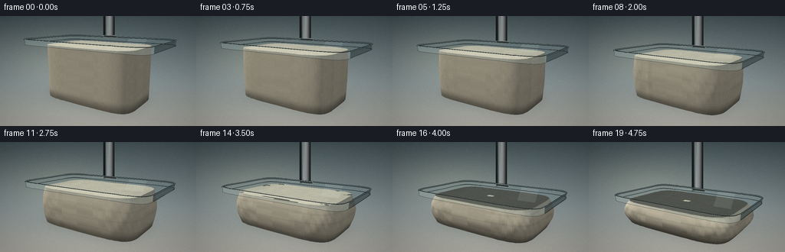
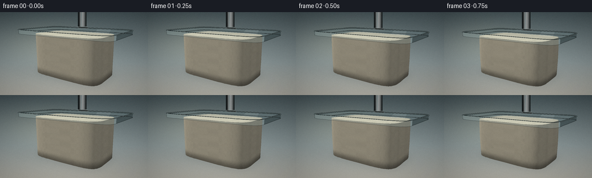
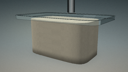
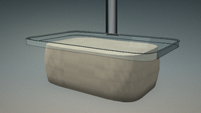
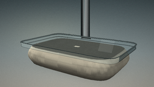
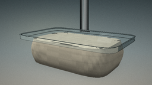
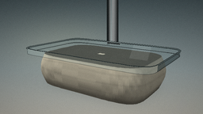

CODING AGENTS AS PIXEL WORLD MODELS
traex/DeepSeek-V4.1-Flash · mechanics_0021
点击播放 · 原生 RGB 像素
此结果可播放，但该运行尚未通过最终提交审核。页面展示不代表评测通过。
逐轮保存的候选
回放视频、检查图与代码变化。
每份候选均可单独播放。实际图片检查记录在下方工具轨迹中。
候选 01播放与检查图
点击播放 · 原生 RGB 像素


展开代码变化
--- 上一保存版本
+++ 本次保存版本
@@ -0,0 +1,509 @@
+from pathlib import Path
+
+import numpy as np
+from PIL import Image, ImageDraw, ImageFilter
+
+import artifact_io
+
+
+CASE_DIR = Path(__file__).resolve().parent
+WIDTH, HEIGHT = 256, 144
+FRAMES, FPS = 20, 4.0
+SS = 3
+RW, RH = WIDTH * SS, HEIGHT * SS
+
+CAMERA = np.array([1.62, 1.04, 2.42], dtype=np.float64)
+TARGET = np.array([0.0, 0.36, 0.0], dtype=np.float64)
+FOV_Y = np.deg2rad(28.5)
+FOCAL = (RH * 0.5) / np.tan(FOV_Y * 0.5)
+
+FOAM_H0 = 0.72
+FOAM_H1 = 0.305
+FOAM_A0 = 0.655
+FOAM_C0 = 0.415
+FOAM_N = 5.2
+
+PLATE_A = 0.91
+PLATE_C = 0.565
+PLATE_T = 0.066
+
+FORWARD = TARGET - CAMERA
+FORWARD /= np.linalg.norm(FORWARD)
+RIGHT = np.cross(FORWARD, np.array([0.0, 1.0, 0.0]))
+RIGHT /= np.linalg.norm(RIGHT)
+UP = np.cross(RIGHT, FORWARD)
+CAM_MATRIX = np.stack([RIGHT, UP, FORWARD], axis=1)
+
+KEY = np.array([-0.50, 0.82, 0.36], dtype=np.float64)
+KEY /= np.linalg.norm(KEY)
+FILL = np.array([0.62, 0.34, 0.24], dtype=np.float64)
+FILL /= np.linalg.norm(FILL)
+
+
+def project(points):
+ points = np.asarray(points, dtype=np.float64)
+ rel = points - CAMERA
+ cam = rel @ CAM_MATRIX
+ z = np.maximum(cam[..., 2], 1e-4)
+ screen = np.stack(
+ [RW * 0.5 + FOCAL * cam[..., 0] / z,
+ RH * 0.5 - FOCAL * cam[..., 1] / z],
+ axis=-1,
+ )
+ return screen, z
+
+
+def smoothstep(edge0, edge1, x):
+ t = np.clip((x - edge0) / (edge1 - edge0), 0.0, 1.0)
+ return t * t * (3.0 - 2.0 * t)
+
+
+def value_noise(x, z, seed=0.0):
+ x = np.asarray(x)
+ z = np.asarray(z)
+ xf0 = np.floor(x)
+ zf0 = np.floor(z)
+ fx = x - xf0
+ fz = z - zf0
+ fx = fx * fx * (3.0 - 2.0 * fx)
+ fz = fz * fz * (3.0 - 2.0 * fz)
+
+ def hashed(ix, iz):
+ v = np.sin(ix * 127.1 + iz * 311.7 + seed * 74.7) * 43758.5453
+ return v - np.floor(v)
+
+ n00 = hashed(xf0, zf0)
+ n10 = hashed(xf0 + 1.0, zf0)
+ n01 = hashed(xf0, zf0 + 1.0)
+ n11 = hashed(xf0 + 1.0, zf0 + 1.0)
+ nx0 = n00 * (1.0 - fx) + n10 * fx
+ nx1 = n01 * (1.0 - fx) + n11 * fx
+ return nx0 * (1.0 - fz) + nx1 * fz
+
+
+def outline(a, c, theta, power=FOAM_N):
+ ct = np.cos(theta)
+ st = np.sin(theta)
+ px = a * np.sign(ct) * np.abs(ct) ** (2.0 / power)
+ pz = c * np.sign(st) * np.abs(st) ** (2.0 / power)
+ return px, pz
+
+
+def make_background():
+ yy = np.linspace(0.0, 1.0, RH, dtype=np.float32)[:, None]
+ xx = np.linspace(0.0, 1.0, RW, dtype=np.float32)[None, :]
+
+ top = np.array([69, 83, 87], dtype=np.float32)
+ mid = np.array([137, 149, 150], dtype=np.float32)
+ bottom = np.array([186, 184, 174], dtype=np.float32)
+
+ lower = np.clip(yy / 0.61, 0.0, 1.0)
+ upper = np.clip((yy - 0.61) / 0.39, 0.0, 1.0)
+ bg = top[None, None, :] * (1.0 - lower[..., None])
+ bg += mid[None, None, :] * lower[..., None]
+ bg = bg * (1.0 - upper[..., None]) + bottom[None, None, :] * upper[..., None]
+ bg = np.broadcast_to(bg, (RH, RW, 3)).copy()
+
+ glow = np.exp(-(((xx - 0.30) / 0.42) ** 2 + ((yy - 0.38) / 0.38) ** 2) * 2.4)
+ bg += glow[..., None] * np.array([20.0, 17.0, 10.0], dtype=np.float32)
+
+ vignette = np.clip(
+ ((xx - 0.5) / 0.68) ** 2 + ((yy - 0.46) / 0.74) ** 2, 0.0, 1.0
+ )
+ bg *= (1.0 - 0.17 * vignette[..., None])
+ return np.clip(bg, 0, 255).astype(np.uint8)
+
+
+def draw_floor_shadows(image, compression, plate_y):
+ overlay = Image.new("RGBA", (RW, RH), (0, 0, 0, 0))
+ draw = ImageDraw.Draw(overlay)
+ theta = np.linspace(0.0, 2.0 * np.pi, 160, endpoint=False)
+
+ # Broad platen shadow, then a tighter foam-contact shadow.
+ for scale, alpha in zip(
+ np.linspace(1.32, 0.82, 12),
+ np.linspace(3.0, 8.0, 12),
+ ):
+ px, pz = outline(PLATE_A * scale, PLATE_C * scale, theta, power=8.0)
+ pts = np.column_stack(
+ [px + 0.14 + 0.035 * compression, np.full_like(px, 0.003), pz - 0.09]
+ )
+ xy, _ = project(pts)
+ draw.polygon([tuple(p) for p in xy], fill=(20, 25, 25, int(alpha)))
+
+ for scale, alpha in zip(
+ np.linspace(1.20, 0.90, 14),
+ np.linspace(5.0, 15.0, 14),
+ ):
+ half_a = FOAM_A0 * (1.0 + 0.17 * compression) * scale
+ half_c = FOAM_C0 * (1.0 + 0.17 * compression) * scale
+ px, pz = outline(half_a, half_c, theta, power=4.5)
+ pts = np.column_stack(
+ [px + 0.085, np.full_like(px, 0.004), pz - 0.045]
+ )
+ xy, _ = project(pts)
+ draw.polygon([tuple(p) for p in xy], fill=(18, 22, 22, int(alpha)))
+
+ # A dark sliver directly under the compressed edge anchors the foam to the floor.
+ px, pz = outline(
+ FOAM_A0 * (1.0 + 0.17 * compression),
+ FOAM_C0 * (1.0 + 0.17 * compression),
+ theta,
+ power=4.5,
+ )
+ pts = np.column_stack([px, np.full_like(px, 0.005), pz])
+ xy, _ = project(pts)
+ draw.line([tuple(p) for p in xy] + [tuple(xy[0])], fill=(14, 18, 18, 55), width=3 * SS)
+
+ overlay = overlay.filter(ImageFilter.GaussianBlur(radius=5.5 * SS))
+ image.alpha_composite(overlay)
+
+
+def draw_press_ram(image, plate_top):
+ # The ram is behind the platen and disappears upward out of frame.
+ x = -0.035
+ z = -0.34
+ base = np.array([x, plate_top + 0.01, z])
+ top = np.array([x, 1.55, z])
+ base_xy, _ = project(base[None, :])
+ top_xy, _ = project(top[None, :])
+ x0, y0 = base_xy[0]
+ x1, y1 = top_xy[0]
+ half_width = 0.060 * FOCAL / max(2.0, abs((base - CAMERA) @ FORWARD))
+ left, right = x0 - half_width, x0 + half_width
+ overlay = Image.new("RGBA", (RW, RH), (0, 0, 0, 0))
+ draw = ImageDraw.Draw(overlay)
+ draw.rectangle(
+ [left - 2 * SS, y1, right + 2 * SS, y0],
+ fill=(25, 30, 31, 255),
+ )
+ bands = 18
+ for i in range(bands):
+ f = i / (bands - 1)
+ px = left + (right - left) * f
+ shade = int(52 + 82 * np.sin(np.pi * f) ** 0.8)
+ if f < 0.22:
+ shade -= int((0.22 - f) * 210)
+ draw.line(
+ [(px, y1), (px, y0)],
+ fill=(shade + 6, shade + 10, shade + 10, 255),
+ width=max(1, int(np.ceil((right - left) / bands)) + 1),
+ )
+ draw.line([(left + 0.34 * (right - left), y1),
+ (left + 0.34 * (right - left), y0)],
+ fill=(190, 199, 197, 95), width=2 * SS)
+
+ collar_h = 0.045
+ collar_w = 0.115
+ c0 = np.array([x - collar_w, plate_top + 0.008, z + 0.005])
+ c1 = np.array([x + collar_w, plate_top + collar_h, z + 0.005])
+ cxy, _ = project(np.stack([c0, c1]))
+ xa, ya = cxy[0]
+ xb, yb = cxy[1]
+ draw.rounded_rectangle(
+ [min(xa, xb), min(ya, yb), max(xa, xb), max(ya, yb)],
+ radius=2 * SS,
+ fill=(44, 50, 51, 255),
+ outline=(126, 136, 135, 190),
+ width=SS,
+ )
+ image.alpha_composite(overlay)
+
+
+def shade_color(normal, point, compression, top_surface=False):
+ n = normal / max(1e-8, np.linalg.norm(normal))
+ lam_key = max(0.0, float(np.dot(n, KEY)))
+ lam_fill = max(0.0, float(np.dot(n, FILL)))
+ sky = 0.5 + 0.5 * n[1]
+
+ # A softly lit ivory foam with cool fill and warm subsurface bounce.
+ warm = np.array([0.84, 0.80, 0.70], dtype=np.float64)
+ cool = np.array([0.69, 0.72, 0.68], dtype=np.float64)
+ base = warm * (0.35 + 0.52 * lam_key + 0.18 * sky)
+ base += cool * (0.09 * lam_fill + 0.035 * sky)
+
+ yfrac = np.clip(point[1] / max(0.08, FOAM_H0 * (1.0 - 0.57 * compression)), 0.0, 1.0)
+ ao = 0.63 + 0.37 * smoothstep(0.0, 0.20, yfrac)
+ base *= ao
+
+ theta = np.arctan2(point[2], point[0])
+ coarse = value_noise(point[0] * 18.0, point[2] * 18.0, 2.4)
+ fine = value_noise(
+ point[0] * 67.0 + np.sin(point[1] * 33.0),
+ point[2] * 61.0 + theta * 1.8,
+ 8.1,
+ )
+ pore = 0.965 + 0.055 * coarse - 0.040 * fine
+
+ if not top_surface:
+ crease_phase = point[1] * (38.0 + 32.0 * compression)
+ crease_phase += np.sin(theta * 2.7 + point[1] * 17.0) * 0.75
+ crease = np.sin(crease_phase)
+ groove = max(0.0, -crease) ** 4
+ base *= 1.0 - 0.13 * compression * groove
+ base *= 1.0 + 0.025 * compression * max(0.0, crease) ** 8
+ else:
+ edge_ring = smoothstep(0.62, 1.0, abs(point[0]) / FOAM_A0)
+ base *= 1.0 - 0.035 * edge_ring
+
+ base *= pore
+ base += np.array([0.018, 0.012, 0.006]) * max(0.0, float(np.dot(n, KEY))) ** 8
+ return np.clip(base * 255.0, 0, 255).astype(np.uint8)
+
+
+def add_quad(faces, p0, p1, p2, p3, color, top_surface=False):
+ corners = np.stack([p0, p1, p2, p3])
+ centroid = corners.mean(axis=0)
+ normal = np.cross(p1 - p0, p3 - p0)
+ obj_center = np.array([0.0, 0.42, 0.0])
+ if np.dot(normal, centroid - obj_center) < 0.0:
+ normal = -normal
+ if np.linalg.norm(normal) < 1e-10:
+ return
+ xy, depth = project(corners)
+ faces.append(
+ (
+ float(depth.mean()),
+ [tuple(p) for p in xy],
+ shade_color(normal, centroid, CURRENT_COMPRESSION, top_surface),
+ )
+ )
+
+
+def build_foam(height, compression):
+ global CURRENT_COMPRESSION
+ CURRENT_COMPRESSION = compression
+ faces = []
+
+ n_y = 50
+ n_t = 116
+ theta = np.linspace(0.0, 2.0 * np.pi, n_t, endpoint=False)
+ volume_gain = (FOAM_H0 / height) ** 0.18
+ rings = []
+
+ for y in np.linspace(0.0, height, n_y):
+ s = 2.0 * y / height - 1.0
+ bulge = 1.0 + 0.185 * compression * max(0.0, 1.0 - s * s) ** 1.25
+ a = FOAM_A0 * volume_gain * bulge
+ c = FOAM_C0 * volume_gain * bulge
+
+ wrinkle = (
+ compression
+ * max(0.0, 1.0 - s * s)
+ * (
+ 0.0045 * np.sin(theta * 15.0 + y * 24.0 + 0.6)
+ + 0.0030 * np.sin(theta * 29.0 - y * 39.0 + 1.7)
+ )
+ )
+ px, pz = outline(a, c, theta)
+ radial = np.stack([px, np.zeros_like(px), pz], axis=-1)
+ radial /= np.maximum(1e-8, np.linalg.norm(radial, axis=-1, keepdims=True))
+ radial *= wrinkle[:, None]
+ ring = np.column_stack(
+ [px + radial[:, 0], np.full_like(px, y), pz + radial[:, 2]]
+ )
+ rings.append(ring)
+
+ for j in range(n_y - 1):
+ for i in range(n_t):
+ k = (i + 1) % n_t
+ add_quad(
+ faces,
+ rings[j][i],
+ rings[j][k],
+ rings[j + 1][k],
+ rings[j + 1][i],
+ None,
+ )
+
+ # Flat pressure face with a fine radial tessellation for soft texture.
+ top_a = FOAM_A0 * volume_gain
+ top_c = FOAM_C0 * volume_gain
+ radial_steps = 15
+ center = np.array([0.0, height, 0.0])
+ top_rings = []
+ for q in np.linspace(0.0, 1.0, radial_steps + 1):
+ px, pz = outline(top_a * q, top_c * q, theta)
+ ripple = 0.0018 * compression * q * np.sin(theta * 7.0 + q * 9.0)
+ top_rings.append(
+ np.column_stack(
+ [px, np.full_like(px, height + ripple), pz]
+ )
+ )
+
+ for i in range(n_t):
+ k = (i + 1) % n_t
+ # Triangles from the center to the first ring.
+ corners = np.stack([center, top_rings[1][i], top_rings[1][k]])
+ centroid = corners.mean(axis=0)
+ normal = np.cross(corners[1] - corners[0], corners[2] - corners[0])
+ if normal[1] < 0.0:
+ normal = -normal
+ xy, depth = project(corners)
+ faces.append(
+ (
+ float(depth.mean()),
+ [tuple(p) for p in xy],
+ shade_color(normal, centroid, compression, top_surface=True),
+ )
+ )
+
+ for q in range(1, radial_steps):
+ for i in range(n_t):
+ k = (i + 1) % n_t
+ add_quad(
+ faces,
+ top_rings[q][i],
+ top_rings[q][k],
+ top_rings[q + 1][k],
+ top_rings[q + 1][i],
+ None,
+ top_surface=True,
+ )
+
+ faces.sort(key=lambda item: item[0], reverse=True)
+ return faces
+
+
+def draw_foam(image, height, compression):
+ faces = build_foam(height, compression)
+ draw = ImageDraw.Draw(image)
+ for _, points, color in faces:
+ draw.polygon(points, fill=tuple(int(v) for v in color), outline=tuple(int(v) for v in color))
+
+
+def plate_outline_points(y, a=PLATE_A, c=PLATE_C, n=9.0, count=144):
+ theta = np.linspace(0.0, 2.0 * np.pi, count, endpoint=False)
+ px, pz = outline(a, c, theta, power=n)
+ return np.column_stack([px, np.full_like(px, y), pz]), theta
+
+
+def draw_plate(image, plate_bottom):
+ top_y = plate_bottom + PLATE_T
+ bottom_pts, theta = plate_outline_points(plate_bottom)
+ top_pts, _ = plate_outline_points(top_y)
+ bottom_xy, _ = project(bottom_pts)
+ top_xy, _ = project(top_pts)
+
+ overlay = Image.new("RGBA", (RW, RH), (0, 0, 0, 0))
+ draw = ImageDraw.Draw(overlay)
+
+ # Visible translucent side band.
+ visible = np.where((np.cos(theta) > -0.08) | (np.sin(theta) > -0.08))[0]
+ for idx in visible:
+ j = (idx + 1) % len(theta)
+ draw.polygon(
+ [
+ tuple(bottom_xy[idx]),
+ tuple(bottom_xy[j]),
+ tuple(top_xy[j]),
+ tuple(top_xy[idx]),
+ ],
+ fill=(54, 68, 70, 170),
+ )
+
+ top_mask = Image.new("L", (RW, RH), 0)
+ mask_draw = ImageDraw.Draw(top_mask)
+ mask_draw.polygon([tuple(p) for p in top_xy], fill=255)
+
+ # Smoky transparent acrylic face.
+ draw.polygon([tuple(p) for p in top_xy], fill=(102, 127, 130, 62))
+
+ highlight = Image.new("RGBA", (RW, RH), (0, 0, 0, 0))
+ hdraw = ImageDraw.Draw(highlight)
+ band = np.array(
+ [
+ [-0.45, top_y + 0.002, -0.34],
+ [0.06, top_y + 0.002, -0.57],
+ [0.26, top_y + 0.002, -0.57],
+ [-0.27, top_y + 0.002, -0.34],
+ ]
+ )
+ band_xy, _ = project(band)
+ hdraw.polygon([tuple(p) for p in band_xy], fill=(225, 241, 240, 38))
+ band2 = np.array(
+ [
+ [0.22, top_y + 0.003, -0.52],
+ [0.49, top_y + 0.003, -0.52],
+ [0.76, top_y + 0.003, 0.28],
+ [0.55, top_y + 0.003, 0.28],
+ ]
+ )
+ band2_xy, _ = project(band2)
+ hdraw.polygon([tuple(p) for p in band2_xy], fill=(242, 249, 247, 24))
+ highlight.putalpha(Image.composite(highlight.getchannel("A"), Image.new("L", (RW, RH), 0), top_mask))
+ overlay.alpha_composite(highlight)
+
+ # Smoked metal perimeter and bright acrylic edge catch the studio key light.
+ top_closed = [tuple(p) for p in top_xy] + [tuple(top_xy[0])]
+ draw.line(top_closed, fill=(31, 40, 41, 235), width=2 * SS)
+ draw.line(top_closed, fill=(203, 219, 216, 135), width=max(1, SS // 2))
+ draw.line([tuple(p) for p in bottom_xy] + [tuple(bottom_xy[0])],
+ fill=(21, 28, 29, 170), width=SS)
+
+ # A restrained leading-edge highlight makes the platen thickness legible.
+ start = int(len(theta) * 0.03)
+ end = int(len(theta) * 0.42)
+ edge = [tuple(top_xy[i]) for i in range(start, end)] + [
+ tuple(bottom_xy[i]) for i in range(end - 1, start - 1, -1)
+ ]
+ draw.polygon(edge, fill=(177, 204, 202, 52))
+
+ # Small metal collar where the ram meets the platen.
+ collar = np.array(
+ [
+ [-0.145, top_y + 0.003, -0.37],
+ [0.075, top_y + 0.003, -0.37],
+ [0.075, top_y + 0.034, -0.37],
+ [-0.145, top_y + 0.034, -0.37],
+ ]
+ )
+ cxy, _ = project(collar)
+ draw.polygon([tuple(p) for p in cxy], fill=(44, 50, 50, 235), outline=(145, 154, 151, 210))
+
+ image.alpha_composite(overlay)
+
+
+def render_frame(index):
+ t = index / (FRAMES - 1)
+ pressure = t ** 1.18
+ pressure = 0.90 * pressure + 0.10 * smoothstep(0.0, 1.0, t)
+ height = FOAM_H0 - (FOAM_H0 - FOAM_H1) * pressure
+ compression = 1.0 - height / FOAM_H0
+
+ base = Image.fromarray(make_background(), mode="RGB").convert("RGBA")
+ draw_floor_shadows(base, compression, height)
+ draw_press_ram(base, height + 0.004 + PLATE_T)
+ draw_foam(base, height, compression)
+ draw_plate(base, height + 0.004)
+
+ image = base.convert("RGB").resize((WIDTH, HEIGHT), Image.Resampling.LANCZOS)
+ pixels = np.asarray(image, dtype=np.float32)
+
+ # Final photographic finish: gentle highlight bloom, grain and vignette.
+ blur = np.asarray(
+ image.filter(ImageFilter.GaussianBlur(radius=1.1)), dtype=np.float32
+ )
+ bright = np.clip((blur - 178.0) / 77.0, 0.0, 1.0)
+ pixels += bright * 4.0
+
+ rng = np.random.default_rng(9100 + index)
+ grain = rng.normal(0.0, 1.15, (HEIGHT, WIDTH, 1))
+ pixels += grain
+ yy, xx = np.mgrid[0:HEIGHT, 0:WIDTH]
+ vignette = 1.0 - 0.075 * (
+ ((xx / WIDTH - 0.5) / 0.66) ** 2
+ + ((yy / HEIGHT - 0.48) / 0.72) ** 2
+ )
+ pixels *= np.clip(vignette[..., None], 0.88, 1.0)
+ return np.clip(pixels, 0, 255).astype(np.uint8)
+
+
+def main():
+ frames = np.stack([render_frame(i) for i in range(FRAMES)], axis=0)
+ artifact_io.save(frames, CASE_DIR)
+ print(f"saved {frames.shape} to {CASE_DIR}")
+
+
+if __name__ == "__main__":
+ main()
可观测工具轨迹
实际执行的命令与返回图片。
命令 1exit 0
/bin/bash -c "pwd && rg --files -g 'prompt.txt' -g 'GENERATION_RULES.md' -g 'task_spec.json' -g '"'!node_modules'"' -g '"'!vendor'"'"
命令 2exit 0
/bin/bash -c "find . -maxdepth 2 -type f -printf '%p\\n' | sort | head -200"
命令 3exit 0
/bin/bash -c 'git status --short --branch 2>/dev/null || true'
命令 4exit 0
/bin/bash -c 'cat prompt.txt'
命令 5exit 0
/bin/bash -c 'cat GENERATION_RULES.md'
命令 6exit 0
/bin/bash -c 'cat task_spec.json'
命令 7exit 0
/bin/bash -c "sed -n '1,240p' artifact_io.py && printf '\\n--- PLAYER ---\\n' && sed -n '1,220p' player_template.html"
命令 8exit 0
/bin/bash -c "python - <<'PY'
import numpy, PIL
print('numpy', numpy.__version__)
print('PIL', PIL.__version__)
PY"命令 9exit 0
/bin/bash -c 'command -v ffmpeg || true'
命令 10exit 1
/bin/bash -c 'python generate.py'
命令 11exit 0
/bin/bash -c 'python generate.py'
命令 12exit 0
/bin/bash -c "python - <<'PY'
import json
from pathlib import Path
import numpy as np
from PIL import Image
p=Path('.')
spec=json.loads((p/'task_spec.json').read_text())
frames=np.stack([np.asarray(Image.open(p/'frames'/f'{i:02d}.png')) for i in range(spec['frames'])])
packed=np.load(p/'pixels.npz')['pixels']
expected=((frames[:,:,:,0].astype(np.uint32)<<16)|(frames[:,:,:,1].astype(np.uint32)<<8)|frames[:,:,:,2]).transpose(1,2,0)
print('shape',frames.shape,'dtype',frames.dtype)
print('pixels match',np.array_equal(packed,expected))
print('frame diff mean',np.abs(np.diff(frames.astype(np.int16),axis=0)).mean(axis=(1,2,3)).round(3).tolist())
print('unique frame 0 colors',len(np.unique(frames[0].reshape(-1,3),axis=0)))
print('artifacts',[(x.name,x.stat().st_size) for x in sorted(p.iterdir()) if x.is_file()])
PY"命令 13exit 0
/bin/bash -c "python - <<'PY'
import numpy as np
from PIL import Image
from pathlib import Path
p=Path('.')
f=np.stack([np.asarray(Image.open(p/'frames'/f'{i:02d}.png')).astype(np.int16) for i in range(20)])
d=np.abs(np.diff(f,axis=0))
for i in range(19):
m=d[i].max(axis=2)
yy,xx=np.unravel_index(np.argmax(m),m.shape)
changed=(m>10).sum()
print(i,i+1,'mean',round(float(d[i].mean()),2),'changed',changed,'max',int(m.max()),'at',xx,yy)
PY"命令 14exit 0
/bin/bash -c "python - <<'PY'
import numpy as np
from PIL import Image
from pathlib import Path
p=Path('.')
a=np.asarray(Image.open(p/'frames'/'14.png')).astype(int)
b=np.asarray(Image.open(p/'frames'/'15.png')).astype(int)
d=np.abs(a-b).max(2)
# Summarize change by horizontal bands.
for y0 in range(0,144,12):
region=d[y0:y0+12]
print(f'{y0:3d}-{y0+11:3d}: mean {region.mean():5.1f}, >40 {(region>40).mean()*100:5.1f}%')
PY"视觉工具实际返回图片 1

视觉工具实际返回图片 2

视觉工具实际返回图片 3

视觉工具实际返回图片 4

视觉工具实际返回图片 5

视觉工具实际返回图片 6

视觉工具实际返回图片 7

保存候选 1 份；完成命令 14 次；可验证图片返回 7 张。原始 API 响应与完整日志保留在本地。